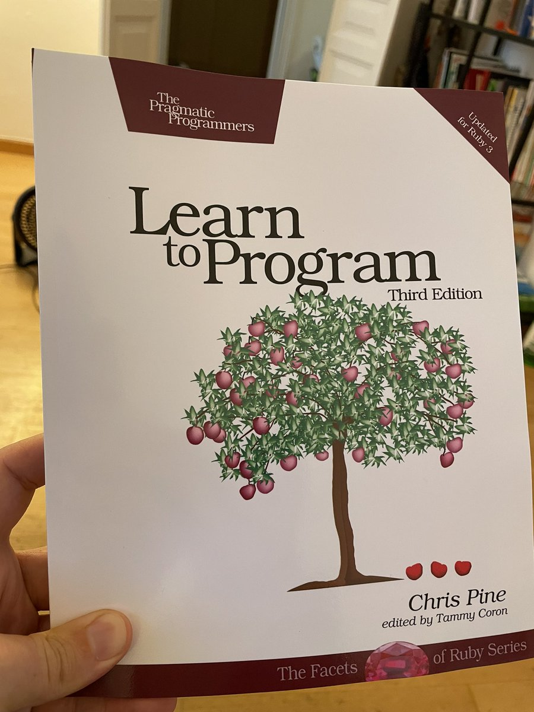

  	<div class="flex-wrap">
      
  	  <article class="tweet  " id="main">
  	    <p class="full_text">
  	      My coworkers are gonna be so glad I finally got this book 😅<br><br>Seriously though, if you’ve got someone in your life who wants their first taste of programming, @OtherChrisPine has just what they need here! <div class="gallery"><ul><li><a href="../../tweets_media/1428304682280275970-E9JbiKTXsAYyzAA.jpg"></a></li></ul></div>
  	    </p>
  	    <p class="created_at">
  	      8/19/2021, 3:35:47 AM
  	    </p>
  	    <p class="favorite_count">Favs: 11</p>
  	    <p class="retweet_count">Retweets: 1</p>
  	    <a class="permalink" href="../1428304682280275970">link</a>
  	  </article>

  	</div>
  </div>
